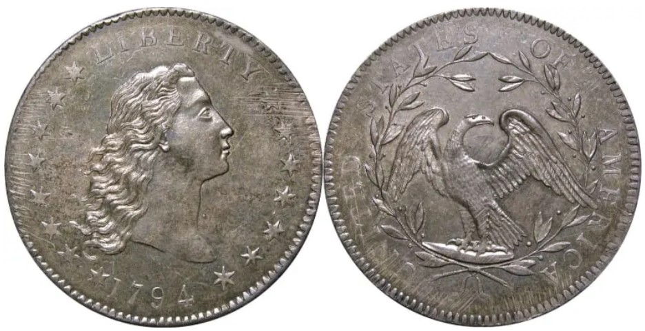

Top 5 Most Expensive Coins In The World
5. Edward III Florin (1343)
Cost: $6.8 Million ----- The oldest coin in the list, approximately 670 years old to be exact, is currently valued at $6.8 Million. The coins value is mainly derived from its age, and it’s thought to be one of only three of the same coins to have survived the centuries thus far. Not only is this coin one of the most expensive coins in the world, but it’s also one of the rarest, and it’s highly likely that no other identical coins will ever be found.
4. Brasher Doubloon (1787)
Cost: $7.4 Million ----- The 1787 Brasher Doubloon, was the result of one man’s goal to convince the New York State to use copper coins instead of gold. However, the State did not agree with Ephriam Brashers plan and said that they didn’t want any new coins to be made of copper. Mr Brasher, being the talented Goldsmith he was, ignored the state and decided to mint new coins anyway, mainly in Bronze, but also minting a few 22-carat gold coins on the side.
3. Saint-Gaudens Double Eagle (1907)
Cost: $7.6 Million ----- Its complicated design led to a holt in production, meaning something had to change. The decision was the responsibility of “Charles Barber”, the U.S Mints chief engraver, who chose to remove the words, “In God We Trust” from the coin. However, this did not go down well with Congress, but the coin still went through production anyway and is now worth an absolute fortune… $7.6 million dollars to be precise!
2. Double Eagle (1933)
Cost: $7.6 Million ----- The next round of Double Eagles, minted in 1933, got recalled from the general public and melted by the mint, due to the then President, Theodore Roosevelt, banning anyone from owning gold. This was because he thought it would help the banking crisis that was happening at the time, however, somehow a small amount of 1993 dated Double Eagles escaped from the mint’s vaults.
1. Flowing Hair Silver/Copper Dollar (1794/5)
Cost: $10 Million ----- The most expensive coin in the world is the 1794/5 Flowing Hair Silver/Copper Dollar. Several expert Numismatic researchers believe that this was the very first silver coin to be minted and issued by the U.S Federal Government. Coin collectors have managed to preserve this historic and highly valuable coin for more than 200 years, which adds even more value to the coins story and price tag.